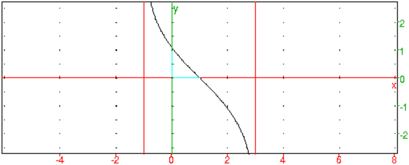

Retour à la page personnelle de Bernard Parisse.Chapitre 3 Fonctions et équations en terminale scientifique
3.1 Étude de f(x)=ln(x2−4x+3/1−x2)
-
Domaine de définition
On tape :
solve(x^2-4x+3)
On obtient :
[1,3]
On tape :
solve(x^2-1)
On obtient :
[-1,1]
On tape :
normal((x^2-4x+3)/(1-x^2))
On obtient :
(-x+3)/(x+1)
On tape :
solve((x^2-4x+3)*(1-x^2)>0)
On obtient :
[((x>-1) && (x<1)),((x>1) && (x<3))]
Donc f est définie sur ]−1;1[∪]1;3[
Mais on peut prolonger f par continuité en 1 en posant f(1)=ln(1)=0
- Dérivée
On tape :
factor(diff(ln((x^2-4x+3)/(1-x^2))))
On obtient :
4/((x-3)*(x+1))
Or (x−3)*(x+1)<0 sur ]−1; 3[ donc f est :
décroissante sur ]−1; 3[
On cherche si f est dérivable en x=1, on tape :
limit(ln((x^2-4x+3)/(1-x^2))/(x-1),x=1)
On obtient :
-1
Donc f est dérivable en x=1 et sa dérivée vaut -1.
- Branches infinies
On tape :
limit(ln((x^2-4x+3)/(1-x^2)),x=-1,1)
On obtient :
+ininity
On tape :
limit(ln((x^2-4x+3)/(1-x^2)),x=3,-1)
On obtient :
-ininity
Donc x=−1 et x=3 sont asymptotes.
On tape :
limit((2x^2-1)/(6x^2+x-2),x=-2/3,-1)
On obtient :
-infinity
- Graphe
On tape :
plotfunc(ln((x^2-4x+3)/(1-x^2)))
affichage(droite(x=-1),droite(x=3),1),
affichage(droite(y=-x+1),2)
On obtient :

3.2 Calcul de dérivée n-ième
3.2.1 Dérivée n-ième de cos(x)3+sin(x)3
Calculer la derivée n-ième de la fonction f(x)=cos(x)3+sin(x)3 en
fonction de n.
On va faire cet exercice de deux façons :
-
On fait le calcul directement en cherchant les relations de récurrence
entre la dérivée n−ième et la dérivée (n+1)−ième en s’aidant de
Xcas.
- On linéarise f(x) puis on dérive.
-
On tape :
f(x):=cos(x)^3+sin(x)^3
diff(f(x))
On obtient :
-3*cos(x)^2*sin(x)+3*cos(x)*sin(x)^2
On tape :
diff(f(x),x,2)
On obtient :
-3*cos(x)^3-3*sin(x)^3+6*cos(x)^2*sin(x)+6*cos(x)*sin(x)^2
On tape :
diff(f(x),x,3)
On obtient :
6*cos(x)^3-6*sin(x)^3+21*cos(x)^2*sin(x)-21*cos(x)*sin(x)^2
On tape :
diff(f(x),x,4)
On obtient :
21*cos(x)^3+21*sin(x)^3-60*cos(x)^2*sin(x)-60*cos(x)*sin(x)^2
On tape :
diff(f(x),x,5)
On obtient :
-60*cos(x)^3+60*sin(x)^3-183*cos(x)^2*sin(x)+183*cos(x)*sin(x)^2
On suppose que la derivée n-ième est de la forme :
f(x)(n)=a(n)cos(x)3+b(n)cos(x)2sin(x)+c(n)cos(x)sin(x)2+d(n)sin(x)3
avec u(n)=|a(n)|=|d(n)| et v(n)=|b(n)|=|c(n)|
On a la relation de récurrence :
u(0)=1 et v(0)=0
u(n+1)=v(n) et
v(n+1)=3u(n)+2v(n)
Les signes de |a(n),b(n),c(n),d(n)| sont les mêmes modulo 4.
On a a(n)*c(n)=b(n)*d(n)<0
On définit les fonctions :
p(n):=ifte(irem(n,4)==0 or irem(n,4)==1,1,-1)
q(n):=ifte(irem(n,4)==0 or irem(n,4)==3,1,-1)
q(n)=p(n+1) donc la définition de q est inutile.
On a alors :
f(x)(n)=p(n+1)u(n)cos(x)3+p(n)u(n)sin(x)3−p(n)v(n)cos(x)2sin(x)−p(n+1)v(n)cos(x)sin(x)2
Il reste à trouver en fonction de n les valeurs de u(n) et de v(n) en
fonction de n.
On tape :
rsolve([u(n)=v(n-1),v(n)=3*u(n-1)+2*v(n-1)],[u(n),v(n)],[u(0)=1,v(0)=0])
On obtient :
[[3^(n+1)*1/12+(-1)^n*3*1/4,3^(n+1)*1/4-(-1)^n*3*1/4]]
Donc :
f(x)(n)=(p(n+1)cos(x)3+p(n)sin(x)3)*(3n*1/4+(−1)n*3/4)−(p(n)cos(x)2sin(x)+p(n+)cos(x)sin(x)2)*(3(n+1)*1/4−(−1)n*3/4)
- Pour linéariser on utilise la formule de Moivre :
(cos(x)+i*sin(x))3=cos(3x)+i*sin(3x) donc
cos(x)3+3*i*(1−sin(x)2)*sin(x)−3*cos(x)*(1−cos(x)2)−isin(x)3=cos(3x)+i*sin(3x)
Donc :
4cos(x)3=cos(3x)+3*cos(x)
4sin(x)3=−sin(3x)+3sin(x)
Ou on tape :
tlin(cos(x)^3+sin(x)^3)
On obtient :
3*cos(x)/4+cos(3*x)/4+3*sin(x)/4-sin(3*x)/4
Il reste à connaitre la dérivée n-ième de cos(x) et de sin(x).
On a :
cos(x)′=−sin(x)=cos(x+π/2) et sin(x)′=cos(x)=sin(x+π/2) donc
cos(x)(n)=cos(x+nπ/2) et sin(x)(n)=sin(x+nπ/2)
On en déduit que :
| f(x)(n)= | | *(3(cos(x+ | | )+sin(x+ | | ))+3n(cos(3x+ | | )−sin(3x+ | | ))) |
On vérifie :
On tape :
k(x,n):=(q(n)*cos(x)^3+p(n)*sin(x)^3)*(3^(n+1)*1/12+(-1)^n*3*1/4)-(p(n)*cos(x)^2*sin(x)+q(n)*cos(x)*sin(x)^2)*(3^(n+1)*1/4-(-1)^n*3*1/4)
h(x,n):=1/4*(3(cos(x+n*pi/2)+sin(x+n*pi/2))+3^n*(cos(3x+n*pi/2)-sin(3x+n*pi/2)))
simplify(k(x,n)-h(x,n))$(n=0..15)
On obtient :
0,0,0,0,0,0,0,0,0,0,0,0,0,0,0,0
3.2.2 Dérivée n-ième de exp(−x2)
On veut calculer la derivée n-ième de la fonction f(x)=exp(−x2) en
fonction de n.
-
Montrer que f(x)(n)=exp(−x2)Pn(x) où Pn est un polynôme
réel de degré n ayant pour terme de plus haut degré an=(−2)n.
De plus si n est pair Pn(x) est pair et si n est impair Pn(x) est
impair.
- Montrer que pour n≥ 1 et pour tout x réel on a :
Pn+1(x)=−2xPn(x)−2nPn−1(x)
- Montrer que, pour n≥ ℕ, Pn vérifie l’équation
différentielle y″−2xy′+2ny=0.
En déduire la valeur Pn(x)
-
On tape :
f(x):=exp(-x^2)
diff(f(x))
On obtient :
-2*x*exp(-x^2)
On tape en décochant sqrt dans la configuration du CAS :
factor(diff(f(x),x,2))
On obtient :
2*(2*x^2-1)*exp(-x^2)
On tape en décochant sqrt dans la configuration du CAS :
factor(diff(f(x),x,3))
On obtient :
-4*x*(2*x^2-3)*exp(-x^2)
On tape en décochant sqrt dans la configuration du CAS :
factor(diff(f(x),x,4))
On obtient :
4*(4*x^4-12*x^2+3)*exp(-x^2)
On tape en décochant sqrt dans la configuration du CAS :
factor(diff(f(x),x,5))
On obtient :
-8*x*(4*x^4-20*x^2+15)*exp(-x^2)
On a obtenu :
P0(x)=1, P1(x)=−2x, P2(x)=4x2−2, P3(x)=−8x3+12x,
P4(x)=16x4−48x2+12, P5(x)=−32x5+160x3−120x
On fait un raisonnement par récurrence pour montrer la propriété :
f(x)(n)=exp(−x2)Pn(x) où Pn est un polynôme réel de degré
n avec an=(−2)n.
Si f(x)(n)=exp(−x2)Pn(x) avec Pn(x) un polynôme de degré n
alors puisque
f(x)(n+1)=exp(−x2)(−2xPn(x)+Pn(x)′)
on a Pn+1(x)=−2xPn(x)+Pn(x)′ et Pn+1 est bien un polynôme de
degré n+1 et an+1=−2*(−2)n=(−2)n+1.
La propriété est vraie pour n=0 et si la propriété est vraie pour n
alors elle est vraie pour n+1, donc la propriété est vraie pour tout
entier naturel et on a Pn+1(x)=−2xPn(x)+Pn(x)′
De plus si Pn est pair (resp impair), 2xPn(x) etPn(x)′ sont impairs
(resp pairs) donc Pn+1(x) est impair (resp pair). Comme P0(x)=1 est pair
on en déduit que Pn(x) est pair (resp impair) si n est pair (resp impair).
- On fait encore un raisonnement par récurrence pour montrer que :
Pn(x)′=−2nPn−1(x) pour n≥ 1.
On a :
P1(x)′=−2=−2*1*1, P2(x)′=8x=−2*2*P1(x)=8x
La propriété est vraie pour n=1
Si elle est vraie pour n alors :
Pn(x)′=−2nPn−1(x) et comme on a d’après la question 1
Pn+1(x)=−2xPn(x)+Pn(x)′ on en déduit que :
Pn+1(x)=−2xPn(x)−2nPn−1(x) donc
Pn+1(x)′=−2Pn(x)−2xPn(x)′−2nPn−1(x)′=
−2Pn(x)+4nxPn−1(x)−2nPn−1(x)′=−2Pn(x)−2n(−2xPn−1(x)+Pn−1(x)).
On a d’après la question 1 :
−2n(−2xPn−1(x)+Pn−1(x))=−2nPn(x) donc
Pn+1(x)′=−2Pn(x)−2nPn(x)=−2(n+1)Pn(x)
La propriété est vraie pour n=1 et si la propriété est vraie pour
n≥ 1 alors elle est vraie pour n+1, donc la propriété est vraie pour tout entier n≥ 1.
Remarque
Plutôt que faire une récurrence, on peut aussi utiliser la formule de
Leibniz pour calculer la dérivée n-ième d’un produit, à savoir :
(u*v)(n)=∑k=0ncomb(n,k)u(k)*v(n−k)
On a f′(x)=(−2x)*f(x) et comme les dérivées k-ième de −2x sont nulle pour k>1 on a :
((−2x)*f(x))(n)=−2xf(n)(x)+n(−2)*f(x)(n−1)=−2xf(n)(x)−2nf(x)(n−1)
Donc:
−2xf(n)(x)−2nf(x)(n−1)=f(x)(n+1)
et pour n≥ 1, Pn+1(x)=−2xPn(x)−2nPn−1(x) - On vient de montrer que pour n≥ 1 on a :
Pn(x)′=−2nPn−1(x).
En dérivant cette égalité on obtient :
Pn(x)″=−2nPn−1(x)′
donc on a les 2 équations :
−2nPn−1(x)=Pn(x)′.
−2nPn−1(x)′=Pn(x)″
Puisque Pn(x)=−2xPn−1(x)+Pn−1(x)′ on en déduit que :
2nPn(x)=2x*(−2nPn−1(x)−(−2nPn−1(x)′)=2xPn(x)′)−Pn(x)″
Donc Pn(x)″−2xPn(x)′+2nPn(x)=0 ce qui signifie que pour n≥ 1
Pn vérifie l’équation différentielle y″−2xy′+2ny=0.
Pour n=0 on a P0(x)=1 donc P0 vérifie aussi cette équation
différentielle.
Si Pn(x)=∑k=0na(k)*xk avec an=(−2)n on a :
Pn(x)′=∑k=0nk*a(k)*xk−1 et
Pn(x)″=∑k=0nk*(k−1)*a(k)*xk−2
donc
∑k=0nk*(k−1)*a(k)*xk−2+(2n−2*k)*a(k)*xk=0
(∑j=0n−2((j+2)*(j+1)*a(j+2)+(2n−2*j)*a(j))*xj)+2a(n−1)xn−1+0=0
on obtient :
an−1=0 et
aj=−aj+2(j+2)(j+1)/(2(n−j))
On sait que a(n)n=(−2)n donc :
a(n−2)=−a(n)*n(n−1)/(2*2)
a(n−4)=−a(n−2)*(n−2)(n−3)/(2*4)
....
a(n−2j)=−a(n−2j+2)*(n−2j+2)(n−2j+1)/(2*2*j)
Donc en multipliant membre à membre :
a(n−2j)=(−1)ja(n)*n!/((n−2j)!22j*j!)=(−1)n−j*2n−2jn!/((n−2j)!j!)
Puisque an−1=0 donc a(n−2j−1)=0
Donc :
Pn(x)=∑j=0iquo(n,2)a(n−2j)xn−2j
En résumé :
Pn(x)=(−1)n∑k=0iquo(n,2)(−1)k*n!/k!*(n−2k)!*2n−2k*xn−2k
On vérifie:
On tape pour calculer P4(x):
n:=4)
(-1)^n*sum((-1)^j*n!/(j!*(n-2j)!)*2^(n-2j)*x^(n-2j),j=0..2)
On obtient P4(x) :
16*x^4-48*x^2+12
On tape :
n:=4)
(-1)^n*sum((-1)^j*n!/(j!*(n-2j)!)*2^(n-2j)*x^(n-2j),j=0..2)
On obtient P5(x) :
-32*x^5+160*x^3-120*x
3.2.3 Dérivée n-ième de g(x)=exp(−1/x2)
Soit g la fonction définie par :
g(0)=0 et pour x≠ 0, g(x)=exp(−1/x2).
Montrer que g est indéfiniment dérivable.
Puis, à l’aide de l’exercice précédent et de l’exercice suivant calculer
la dérivée n-ième de g(x).
g est indéfiniment dérivable sur ℝ*.
On tape :
g(x):=exp(-1/x^2)
diff(g(x),x,n)$(n=1..3)
diff(g(x),x,4)
On obtient :
2*exp(-1/x^2)/x^3,(4*exp(-1/x^2)-6*x^2*exp(-1/x^2))/x^6,
(8*exp(-1/x^2)-36*x^2*exp(-1/x^2)+24*x^4*exp(-1/x^2))/x^9
(16*exp(-1/x^2)-144*x^2*exp(-1/x^2)+300*x^4*exp(-1/x^2)-120*x^6*exp(-1/x^2))/x^12
Montrons par récurrence que :
où Qn(x) est un polynôme de degré 2(n−1).
On a d’après les calculs précédents :
Q1(x)=−2
Q2(x)=4−6*x2
Q3(x)=8−36*x2+24*x4
Q4(x)=16−144*x2+300*x4−120*x6
On calcule g(x)(n+1) en fonction de g(x)(n) :
si g(x)(n)=Qn(x)/x3n*exp(−1/x2) on a
g(x)(n+1)=2Qn(x)/x3(n+1)*exp(−1/x2)+Qn(x)′/x3n*exp(−1/x2)−3nQn(x)/x3n+1*exp(−1/x2)
Donc :
g(x)(n+1)=Qn+1(x)/x3(n+1)*exp(−1/x2) avec
Qn+1(x)=−2Qn(x)+x3Qn(x)′−3nx2Qn(x)=x3Qn(x)′+(2−3nx2)Qn(x)
Qn+1(x) est donc bien un polynôme de degré 2+2(n−1)=2n
Montrons que g est indéfiniment dérivable en 0 et que g(n)(0)=0.
On tape :
limite(g(x),x=0)
On obtient :
0
g est donc continue en 0.
On tape :
limite(g(x)/x,x=0,1)
On obtient :
0
On tape :
limite(g(x)/x,x=0,1)
On obtient :
0
g est donc dérivable en 0.
On a g(n)/x=Qn(x)/x3n+1*exp(−1/x2).
Donc limx−>0g(n)/x=0
On tape :
assume(k,integer)
limite(g(x)/x^k,x=0,1)
On obtient :
0
On tape :
limite(g(x)/x^k,x=0,1)
On obtient :
0
Donc g est indéfiniment dérivable en 0 et g(n)(0)=0.
On a :
x3*g′(x)=2g(x)
On dérive n fois x3*g′(x) en utilisant la formule de Leibniz.
Les dérivées n-ième de x3 sont nulles pour n>3 donc :
2g(x)(n)=(x3*g′(x))(n)=∑k=03comb(n,k)*(x3)(k)(g(x))(n−k+1)
donc
2g(x)(n)=x3g(x)(n+1)+3nx2g(x)(n)+3n(n−1)xg(x)(n−1)+3n(n−1)(n−2)g(x)(n−2)
On en déduit que :
Qn+1(x)+(3nx2−2)Qn(x)+3n(n−1)x4Qn−1(x)+3n(n−1)(n−2)x6Qn−2(x)=0
Pour déterminer Qn(x) on va utiliser l’exercice précédent et
l’exercice qui suit !
3.2.4 Dérivée n-ième de g(x)=f(1/x)
Soit f une fonction indéfiniment dérivable.
On cherche à exprimer la dérivée n-ième de g(x)=f(1/x) en fonction de la dérivée n-ième de f.
Puis en utilisant la valeur de la dérivée n-ième de f(x)=exp(−x2), on
pourra par exemple trouver les dérivées n-ième de la fonction g définie par g(0)=0 et pour x≠ 0, g(x)=exp(−1/x2).
Pour cela on cherche à exprimer la dérivée n-ième de g(x)=f(1/x) en
fonction de la dérivée n-ième de f.
On tape :
g(x):=f(1/x)
diff(g(x),x,n)$(n=1..3)
On obtient :
-f’(1/x)/x^2,(2*f’(1/x)+f’’(1/x))/x^3,(-6*x^2*f’(1/x)-6*x*f’’(1/x)-f’’’(1/x))/x^6
On tape :
diff(g(x),x,4)
On obtient :
(24*x^3*f’(1/x)+36*x^2*f’’(1/x)+12*x*f’’’(1/x)+f’’’’(1/x))/x^8
On va montrer que :
g(n)(x)=∑k=1na(k,n)x−n−kf(k)(1/x)
avec
a(1,n)=(−1)nn!
a(k,n)=(−1)nn!(n−1)!/k!(k−1)!(n−k)!
a(n,n)=(−1)n
On a :
g(n+1)(x)=−∑k=1na(k,n)x−n−k−2f(k+1)(1/x)−∑k=1na(k,n)(n+k)x−n−k−1f(k)(1/x)
Donc :
a(1,n+1)=−a(1,n)(n+1),
Comme a(1,1)=−1 on en déduit que a(1,n)=(−1)nn!
a(n+1,n+1)=−a(n,n),
Comme a(1,1)=−1 on en déduit que a(n,n)=(−1)n
En posant j=k-1 dans la 2ième somme:
∑k=1na(k,n)(n+k)x−n−k−1f(k)(1/x)=∑j=0n−1a(j+1,n)n(n+j+1)x−n−j−2f(j+1)(1/x)
Donc pour k=1..n−1 :
a(k+1,n+1)=−a(k,n)−a(k+1,n)n(n+k+1)
ou encore j=k+1:
a(j,n+1)=−a(j−1,n)−a(j,n)n(n+j) pour j=2..n
Si a(k,n)=(−1)nn!(n−1)!/k!(k−1)!(n−k)! pour k=1..n
a(k,n+1)=−(−1)nn!(n−1)!/(k−2)!(k−1)!(n−k+1)!+(−1)nn!(n−1)!n(n+k)/k!(k−1)!(n−k)!
a(k,n+1)=(−1)n+1n!(n−1)!/(k−2)!(k−1)!(n−k)!*(1/n−k+1+n+k/k(k−1))
On tape :
factor(1/(n-k+1)+(n+k)/(k*(k-1)))
On obtient :
n*(n+1)/(k*(k-1)*(n-k+1))
Donc pour k=2..n :
a(k,n+1)=(−1)n+1n!(n+1)!/k!(k−1)!(n−k+1)!
On a donc montré par récurrence que :
| g(n)(x)= | | | (−1)nn!(n−1)! |
|
| k!(k−1)!(n−k)! |
| x−n−kf(k)(1/x) |
Si f(x)=exp(−x2), on sait que :
f(k)(1/x)=Pk(1/x)*exp(−1/x2)
donc si g(x)=exp(−1/x2)=f(1/x), on a :
g(n)(x)=∑k=1n(−1)nn!(n−1)!/k!(k−1)!(n−k)!x−n−kPk(1/x)exp(−1/x2)
Pk(x)=(−1)n∑j=0iquo(k,2)(−1)j*k!/j!*(k−2j)!*2k−2j*xk−2j
Or Pk(1/x)=(−1)n∑j=0iquo(k,2)(−1)j*k!/j!*(k−2j)!*2k−2j*x2j−k= Rk(x)/xk donc
Rk(x)=(−1)n∑j=0iquo(k,2)(−1)j*k!/j!*(k−2j)!*2k−2j*x2j
∑j=0kc(j,k)xk−j=∑j=0kc(k−j,k)xj
donc x−n−kPk(1/x)= Rk(x)/xn+2k.
x3ng(n)(x)=(∑k=1n(−1)nn!(n−1)!/k!(k−1)!(n−k)!Rk(x)*x2*n−2k)exp(−1/x2)
Donc :
Qn(x)=∑k=1n(−1)nn!(n−1)!/k!(k−1)!(n−k)!Rk(x)*x2*n−2k avec
Rk(x)=(−1)n∑j=0iquo(k,2)(−1)j*k!/j!*(k−2j)!*2k−2j*x2j
On vérifie que :
Q1(x)=−2
Q2(x)=4−6*x2
Q3(x)=8−36*x2+24*x4
Q4(x)=16−144*x2+300*x4−120*x6
On tape :
R(n,x):=(-1)^n*sum((-1)^j*n!/(j!*(n-2j)!)*2^(n-2j)*x^(2j),j=0..iquo(n,2)
Q(n,x):=sum((-1)^n*(n!*(n-1)!)/(k!*(k-1)!*(n-k)!)*R(k,x)*x^(2*n-2k),k=1..n)
Q(3,x)
On obtient :
24*x^4-36*x^2+8
On tape :
Q(3,x)
On obtient :
-120*x^6+300*x^4-144*x^2+16
Ouf ! c’est correct!
Retour à la page personnelle de Bernard Parisse.